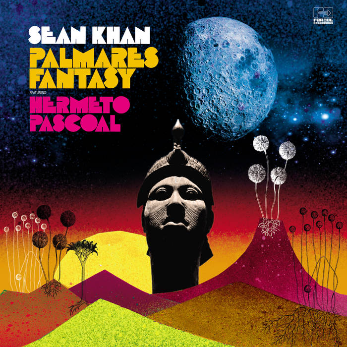

Blog
History of Jazz(1): Introduction
Jazz originated in the late 19th to early 20th century as interpretations of American and European classical music entwined with African and slave folk songs and the influences of West African culture. Its composition and style have changed many times throughout the years with each performer's personal interpretation and improvisation, which is also one of the greatest appeals of the genre.
Sean Khan: Palmares Fantasy
{kind=link}
Palmares Fantasy is the fifth album to be released by British saxophonist Sean Khan under his own name or as the leader of SK Radicals. Like its predecessors, it is a blinder, in touch with the jazz tradition while absorbing influences from beyond it and wearing its political heart on its sleeve. The music is characteristic of Khan's wide-angled aesthetic. To make it, he travelled to Rio de Janeiro to collaborate with fellow outsider, multi-instrumentalist Hermeto Pascoal, and other luminaries of the Brazilian music scene, and took the album's title from a settlement established by escaped slaves in northeastern Brazil some 400 years ago. Khan's liner note for the title track observes that while most of Palmares's population was made up of ex-slaves, many deserter conquistadors also joined the settlement, making it a rainbow-hued community of rebels. The album is a utopian jazz message for a world in crisis, spiritual jazz informed by samba's revolutionary tradition.
Despite his talent, Khan remains strictly niche. Partly, this is of his own making. Partly, he is regarded as too subversive by Britain's jazz establishment. Khan is a largely self-taught musician. He was unable to afford his teenage dream of studying at Boston's Berklee School of Music, and was rejected by London's Guildhall School of Music for being "too raw." He became disillusioned with the exclusivity and institutionalisation of the jazz world, but his love for the music remained and he taught himself alto and soprano saxophone, clarinet and flute.
Pascoal, who Miles Davis once called "the most impressive musician in the world," is another self-taught maverick. The two autodidacts make a dream team here and the rapport between them is brilliantly showcased on the unaccompanied, free-rhythm duet, "The Conversation." Other guests include, from Brazil, Azymuth drummer Ivan Conti, bassist Paulo Russo, nu-bossa vocalist Sabrina Malheiros and Cinematic Orchestra frontswoman Heidi Vogel and, from Britain, guitarist Jim Mullen.
Palmares Fantasy is an instrumentally focused album, but vocals are an important element of several tracks, notably the opener, "Moment Of Collapse." Khan's meditation on the instability of modern Western civilisation, the piece is gorgeously sung by Vogel over a richly arranged string-section and Alice Coltrane-like harp. Seven of the nine tracks are Khan originals. The other two tunes are Pascoal's lovely "Montreux" and an uplifting soul-jazz take on Milton Nascimento's MPB classic "Tudo Que Voce Podia Ser," sung by Malheiros.
Palmares Fantasy is the sound of summer—with an edge.
Comment
Muriel said: Do you know where I can find the album?
Edna said: You can buy digital version online!
Cecil said: I like the vocal part!
History of Jazz(2):
Blended African and European music sensibilities
By the 18th century, slaves gathered socially at a special market, in an area which later became known as Congo Square, famous for its African dances.
By 1866, the Atlantic slave trade had brought nearly 400,000 Africans to North America. The slaves came largely from West Africa and the greater Congo River basin and brought strong musical traditions with them. The African traditions primarily use a single-line melody and call-and-response pattern, and the rhythms have a counter-metric structure and reflect African speech patterns.
An 1885 account says that they were making strange music (Creole) on an equally strange variety of 'instruments'—washboards, washtubs, jugs, boxes beaten with sticks or bones and a drum made by stretching skin over a flour-barrel.
Lavish festivals featuring African-based dances to drums were organized on Sundays at Place Congo, or Congo Square, in New Orleans until 1843. There are historical accounts of other music and dance gatherings elsewhere in the southern United States.
Another influence came from the harmonic style of hymns of the church, which black slaves had learned and incorporated into their own music as spirituals. The origins of the blues are undocumented, though they can be seen as the secular counterpart of the spirituals. However, as Gerhard Kubik points out, whereas the spirituals are homophonic, rural blues and early jazz "was largely based on concepts of heterophony."
During the early 19th century an increasing number of black musicians learned to play European instruments, particularly the violin, which they used to parody European dance music in their own cakewalk dances. In turn, European-American minstrel show performers in blackface popularized the music internationally, combining syncopation with European harmonic accompaniment. In the mid-1800s the white New Orleans composer Louis Moreau Gottschalk adapted slave rhythms and melodies from Cuba and other Caribbean islands into piano salon music. New Orleans was the main nexus between the Afro-Caribbean and African-American cultures.
Comment
Ivan said: The history of jazz music is an irony history.
Belle said: This article have me had different feeling when I listening jazz.
Quinten said: Never know the history. Thanks for sharing.
Comment
Den said: Oh! This series looks interesting!
Gillian said: Looking forward for the following sessions!
Annabel said: Are you going to introduce modern jazz music?